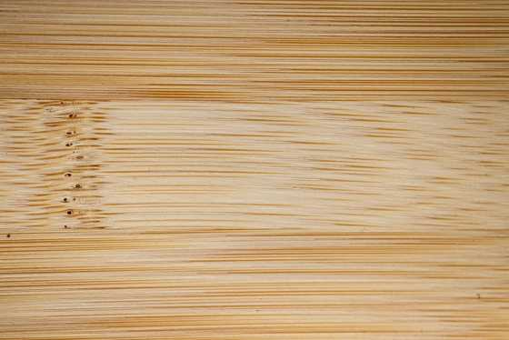
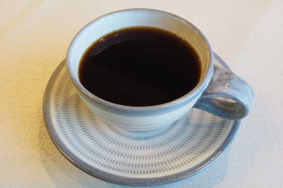
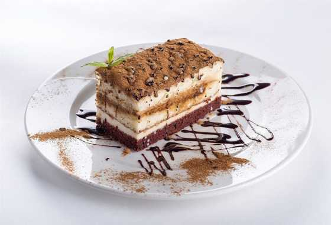
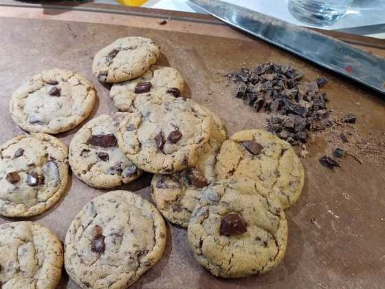
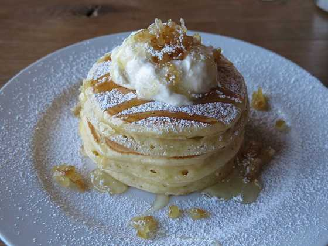
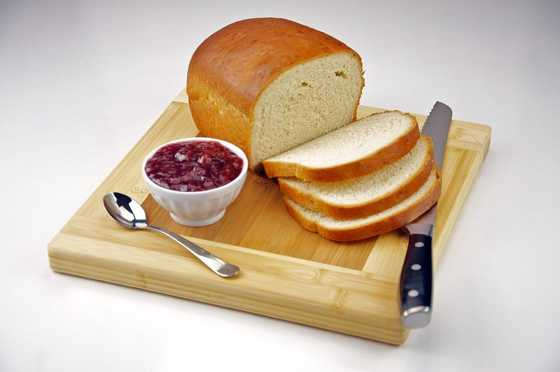
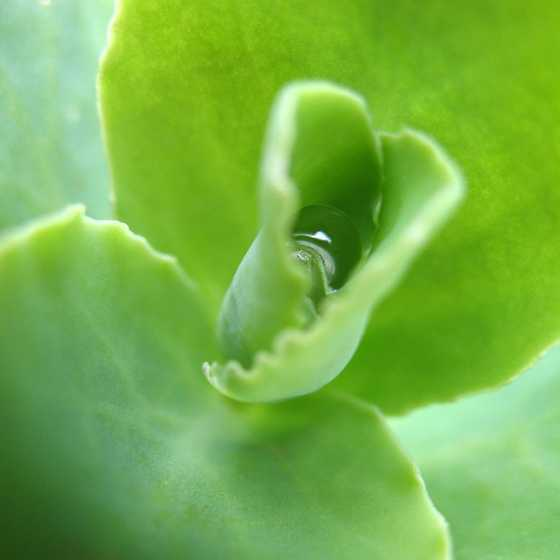
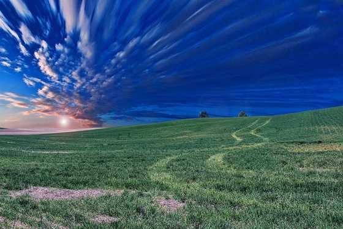

三重県熊野市・大泊の喫茶店
古い家の窓辺で、
ひと息つく一杯を。
大泊の町にある喫茶店「熊野 -yuya-」。ふらりと立ち寄って、ゆっくり過ごすためのお店です。
お店のこと
大泊にある、昨年11月にひらいた喫茶店。
Instagramのプロフィールには「大泊にある喫茶店」「昨年11月OPEN」と紹介されています。所在地は三重県熊野市大泊町189です。
地域の古民家カフェをまとめた一覧にも掲載されており、古い建物を活かした喫茶店とみられます。同じ住所では「古民家 合掌苑 ゆや」というアカウントも見つかりましたが、お店との関係は確認できていません。
店名「熊野 -yuya-」の由来は公開情報では確認できませんでした。このページの構成や言葉づかいは、「古い家で過ごす静かな時間」という制作側のイメージです。

ひと休みのイメージ
湯気と、木のぬくもりと、甘いもの。
写真は雰囲気を伝えるフリー素材です。お店で提供しているものそのものではありません。







メニュー
喫茶店のひとときに。
メニュー・価格は公開情報で確認できていないため、お店からの情報をいただき次第掲載します。




口コミ
こんなお声が届くお店に。
以下は制作側が作成した「イメージ例」で、実際のお客様の声ではありません。
イメージ例
窓から入る光がやわらかくて、時間を忘れてのんびりできました。
イメージ例
温かい飲みものを頼んで、ぼんやり外を眺める。そんな時間がちょうどよかったです。
イメージ例
町なかにこういう落ち着ける場所があると嬉しいです。また寄りたいと思います。


アクセス
お店の場所と情報
| 所在地 | 〒519-4322 三重県熊野市大泊町189 |
|---|---|
| 電話 | 準備中 |
| 営業時間 | 準備中 |
| 定休日 | 準備中 |
| SNS | Instagram @kumano.yuya |
営業時間・定休日は媒体により記載が異なるため掲載せず「準備中」としています。最新情報はInstagramをご覧ください。